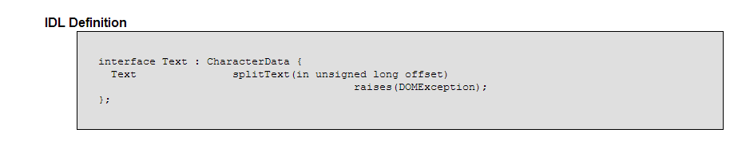

JavaScript Temelleri
Bölüm 19
W3C Belge Nesne Modeli (W3C Document Object Model) (W3C-DOM)
Bölüm 19.6.8 Sayfa 1
19.6.8- Text Arabirimi

Şekil 19.6.8- 1 - DOM Düzey 2 de Text Arabiriminin IDL Yazılımı
Text arabirimi, Node ve CharacterData arabirimlerinin özelliklerini kalıtımla elde eder. Özellikler, CharacterData arabiriminin özelliklerinin Text arabirimin içerğine uygulanması önemlidir. Text arabiriminin kendine özgü tek özelliği, sadece splitText() metodudur.
Sözel veri içerikli Text arabiriminin kendine özgü tek özelliği olan splitText() metodu, bir Text düğümünü, offset değerine kadar ilk kısım, offset değerinden sonrası ikinci kısım olmak üzere, ikiye ayırır ve eğer bir ebeveyn düğüm varsa yeni düğümleri birbiri ardına eşdüzey (sibling) olarak yerleştirir. Bu metot, metin uzunluğuna eşit bir offset değeri ile çağrılırsa, ikinci düğümüm içeriğinin uzunluğu sıfır olur. Eğer negatif veya metin uzunluğundan fazla bir offset değeri ile çağrılırsa bir hata oluşturur. Bu metodun kullanımı,
sözelDüğümSınıfÖrneği = splitText( tamsayı tipte offset)
şeklindedir.
Text arabiriminin splitText () metodu, içerik alan bir elementin içeriğinde iki ardışık sözel düğüm oluşturduğundan, elementin yapısal bütünlüğünün yeniden yapılandırılması için, Element arabiriminin normalize () metodunun uygulanması uygun bir çalışma şekli olmaktadır. Bu yöntem, aşağıda kodları görülen programda uygulanmaktadır. Program sonuçları, bağlantılı olan sayfada görüntülenmektedir.